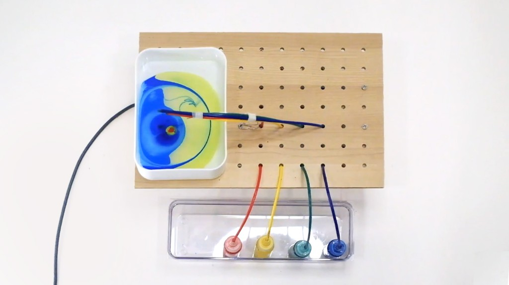
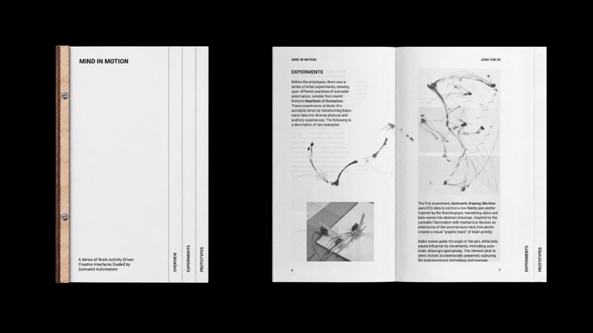
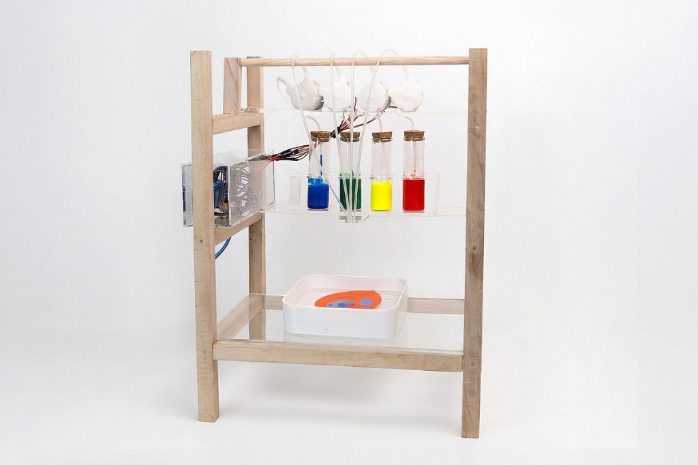
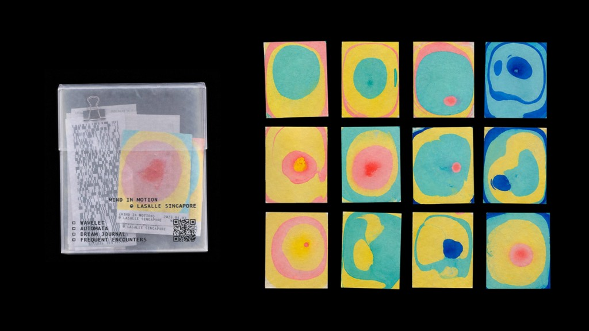
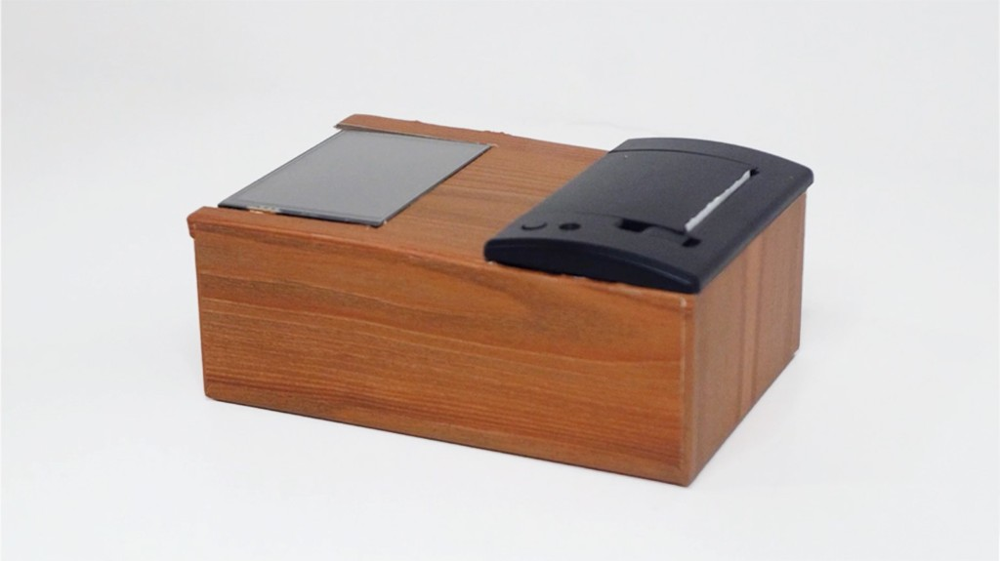
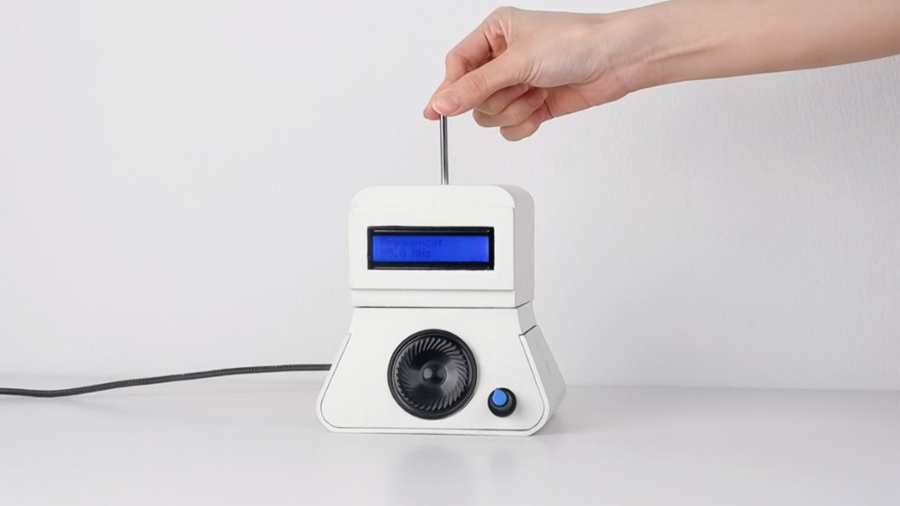
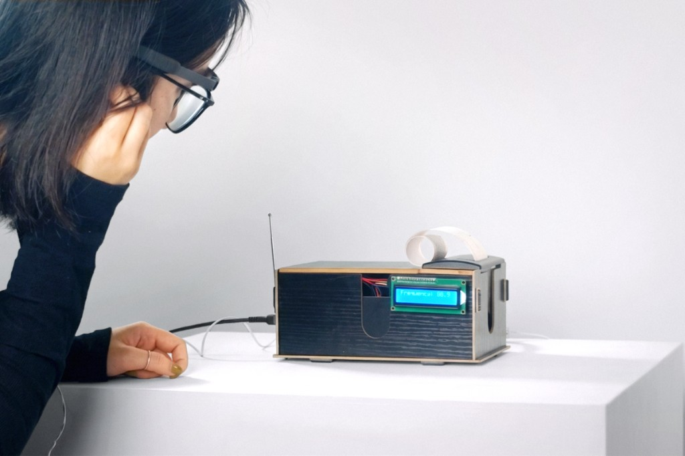
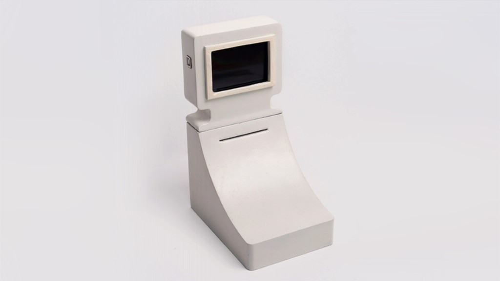
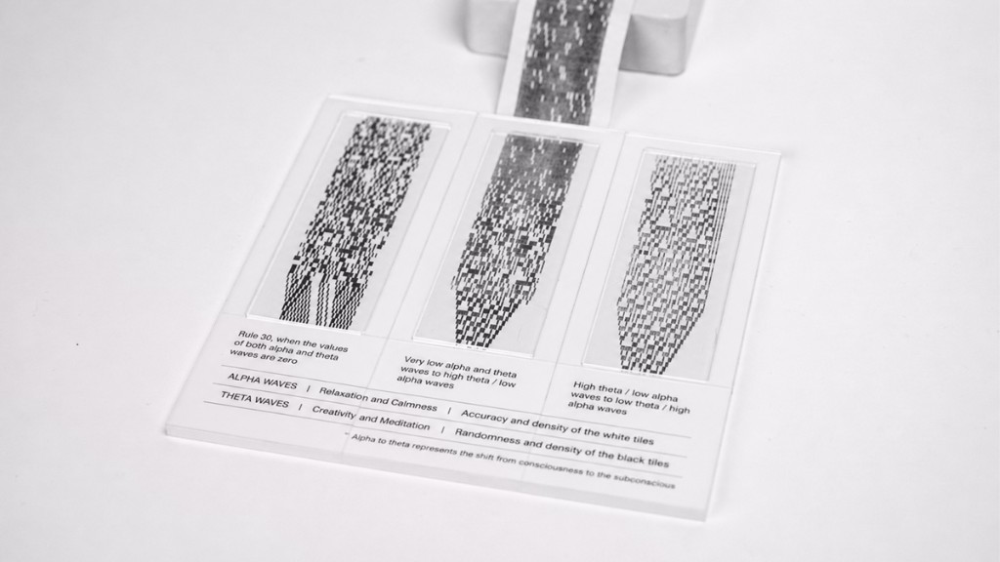

Mind in Motion is a series of interfaces that translate users' brain activity into creative outputs and a physical souvenir that captures an imprint of their individuality.[1] It is part of the first section of Yunso's Triangle, along with Stone and Dream Journal.
Mind in Motion turns brain activity into creative outputs and a physical souvenir.[1] It is part of the first section of Yunso's Triangle, along with Stone and Dream Journal.
Concept
Mind in Motion responds to a cultural anxiety about AI and authorship. As generative tools automate more of creativity, originality is increasingly questioned.
Brain–computer interfaces are often designed for utility and control. However, this project treats brain activity as an ambiguous, passive input.
Drawing from surrealist automatism, it reconstructs the automatic through a machine. Brain activity becomes a recording instrument for the unconscious rather than a tool for intention.
It responds to anxiety about AI and authorship. Brain–computer interfaces are usually built for control; here brain activity is a passive input. Drawing from surrealist automatism, it records the unconscious rather than intention.
-
EEG headband
Early experiments
Surrealist strategies, such as automatic drawing, automatic writing, music, spiritualist radio scanning, and action painting, were translated into seven quick prototypes. These low-fidelity experiments tested how real-time brain activity could drive real-time outputs.
Users were most engaged when the system produced a tangible object, and they could watch it being made in front of them in real time.
Automatic drawing, automatic writing, music, spiritualist radio scanning, and action painting became seven prototypes. People engaged most when an object was made in front of them.
-

Early experiment -

Publication
Wavelet
Wavelet is a marbling device. Arduino-controlled water pumps drip pigment onto a liquid surface, and EEG data decides the colour: delta is blue, theta green, alpha yellow, and beta red.
The paint itself supplies the randomness, in the manner of paper marbling and action painting. A later version uses a three-tier wooden frame and hospital-grade infusion sets so the drops fall more slowly and evenly.[2]
Wavelet drips pigment onto liquid. EEG sets the colour: delta blue, theta green, alpha yellow, beta red. The paint supplies the randomness, as in paper marbling.[2]
-

Wavelet -

Wavelet prints
Dream Journal
This interface reworks automatic writing. Theta and alpha waves, read as states of dreaming and calm wakefulness, select words from an index drawn from dream interpretation.
A thermal printer acts as a contemporary typewriter, producing a stream of text that follows the user's level of relaxation. An OLED screen was added so people could see the brainwave data as the sentences appeared.
It reworks automatic writing. Theta and alpha waves pick words from dream interpretation, and a thermal printer types a stream that follows relaxation.
-

Dream Journal -
Dream Journal
Frequent Encounters
Frequent Encounters turns theta waves into radio frequencies. The idea sits between surrealist automatism and the spirit box: a scan of stations that treats noise as a material.
The finished form looks like a twentieth-century machine, in cream with rounded corners, and plays local stations through a speaker and an earphone jack.
Frequent Encounters turns theta waves into radio frequencies, between surrealist automatism and the spirit box, and plays local stations.
-

Frequent Encounters -

Previous Prototype of Frequent Encounters
Automata
Automata translates brainwaves into abstract bitmap images, a graphic trace of neural activity in the spirit of automatic drawing. It uses a cellular automaton, Rule 30, and lets theta measurements disturb the pattern.
New rows appear every 250 milliseconds, scroll off the screen, and print onto thermal paper.
Automata turns brainwaves into bitmap images with a cellular automaton, Rule 30, disturbed by theta, and prints them on thermal paper.
-

Automata -

Automata prints
References
- Jung, Yunso (2025). Mind in Motion. jungyunso.com. ↑
- Jung, Yunso. Mind in Motion: Catalogue of Making. jungyunso.com. ↑